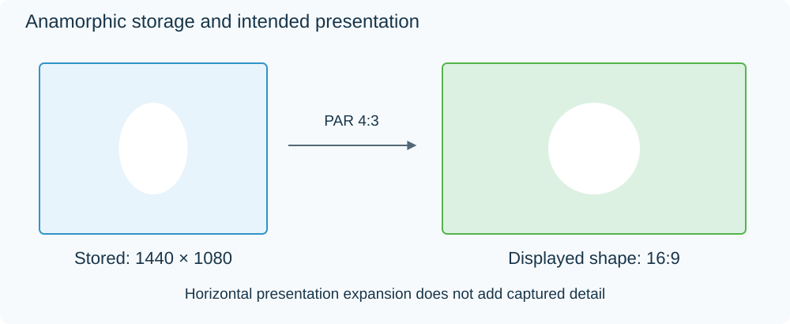

Anamorphic Video
Anamorphic video stores a picture with a different sample-grid shape from its intended display shape.
An older widescreen recording may report 1440 × 1080, yet look properly proportioned on a 16:9 television. Its storage is anamorphic: the grid has been allocated fewer horizontal positions than a square-pixel representation of the intended picture would use.
The missing width is described by pixel aspect information, rather than supplied by another set of hidden columns.

1440 × 1080 samples with PAR 4:3 have the same display proportions as 1920 × 1080 square pixels.
A 1440-column recording displayed at 16:9
The stored grid's width-to-height ratio is 1440/1080 = 4/3. The file tells the player that each sample interval should appear 4/3 as wide as tall. Applying that factor gives:
(4/3) × (4/3) = 16/9.
On a square-pixel screen, the player can present the decoded image across a 1920 × 1080 rectangle. It calculates the screen samples needed for that rectangle from the 1440-column source. The people and circles have their intended proportions, while the recorded horizontal detail still originates from 1440 sample positions.
This arrangement allowed recording and delivery formats to carry a widescreen field of view in a constrained raster. It describes digital storage. A film need not have been photographed with an anamorphic lens to use this representation.
Two ways to make a correctly shaped copy
| Copy | Picture representation | Presentation information |
|---|---|---|
| Preserve the original encoding | 1440 × 1080 samples | Retain PAR 4:3 |
| Convert to square pixels | Resample to 1920 × 1080 | Use PAR 1:1 |
The first route can preserve the compressed video during compatible repackaging. The app applies its aspect information during display. The second route constructs a new sample grid and ordinarily needs video encoding if it is saved as a compressed file.
Both routes aim at the same 16:9 composition. A square-pixel copy is a convenient representation of the source, rather than additional camera detail.
When the result is squeezed or too wide
If the original grid is treated as square, it displays as 4:3 and faces look thin. If it is resampled to 1920 × 1080 and its old PAR 4:3 is retained, its equivalent width becomes 2560 at height 1080: too wide.
The processing error is the same presentation transformation being omitted or applied twice. This gives a useful way to examine a converted Emby recording: follow the source dimensions and PAR into the output dimensions and PAR, and calculate the intended ratio at each boundary.
Letterboxing solves a different storage problem. It places a wider image inside a frame with border rows. An anamorphic source changes the sample spacing used for presentation. A file can combine both, so the stored frame's aspect information and the active image inside it should be interpreted separately.